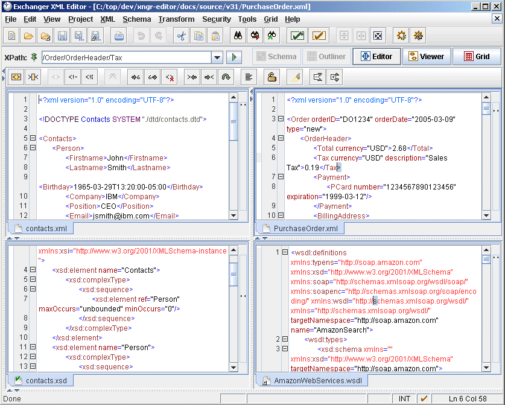
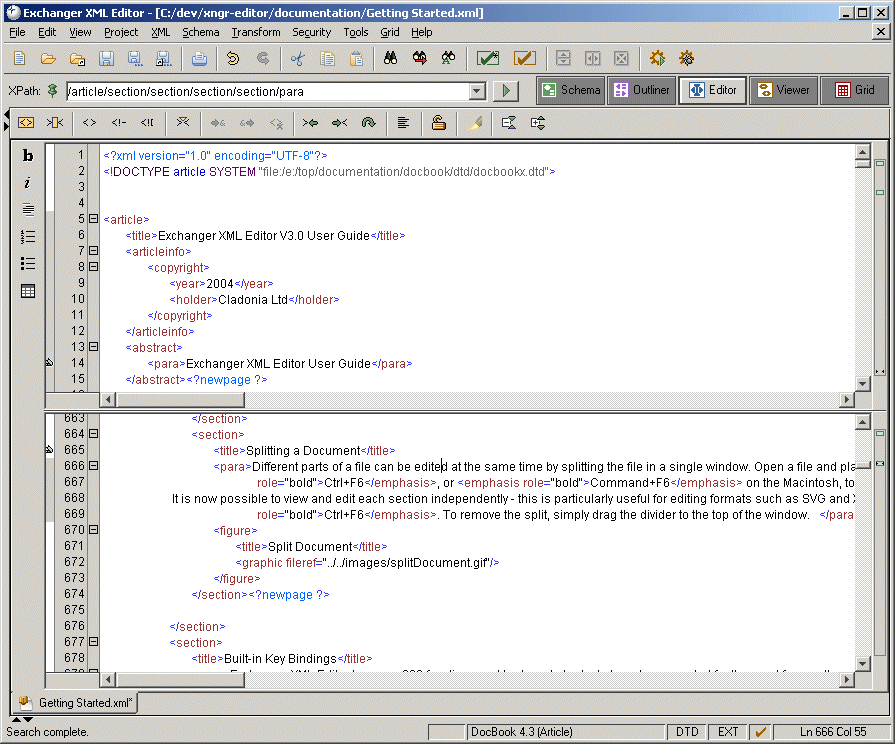
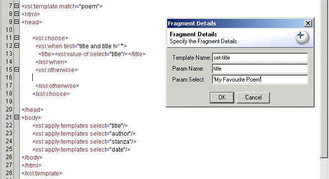
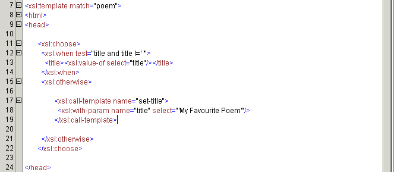
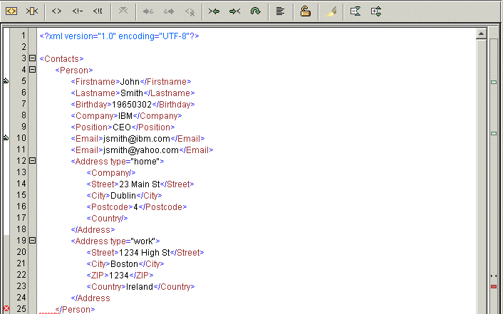
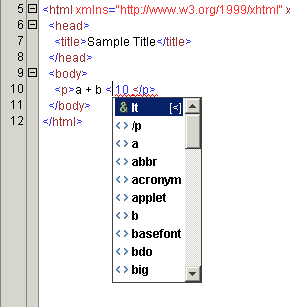
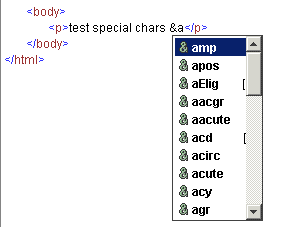
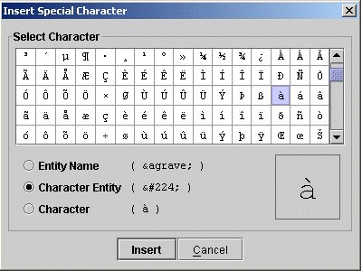
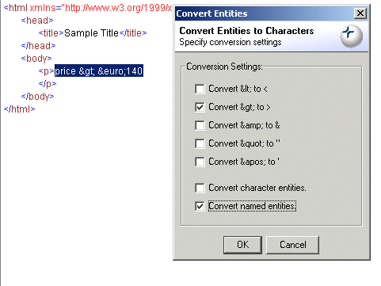

Editing XML Content
The Exchanger XML Editor provides numerous aids for simplifying the editing of XML content including: document templates;
tag prompting; end tag completion; quick commenting, tagging and indenting; and content formatting (or pretty printing). Standard
editing functionality such as Undo, Redo, Find/Replace, Goto Line Number is also supported.
Window Management
Splitting Multiple Windows
Two or more documents can be displayed on the screen at the same time to simplify concurrent editing or comparison. Open two
files as normal and then
choose View->Split Vertically or press the Split Vertically
button ( )
from the Standard Toolbar. The two files will be displayed vertically side-by-side. Multiple documents can also be
displayed one on top of the other by choosing View->Split Horizontally or pressing
the Split Horizontally button (
)
from the Standard Toolbar. The two files will be displayed vertically side-by-side. Multiple documents can also be
displayed one on top of the other by choosing View->Split Horizontally or pressing
the Split Horizontally button ( ). The number of splits is only limited by the number of open documents, and both vertical and horizontal splits can occur
at the same time. To undo a split choose View->Unsplit or press the Unsplit button (
). The number of splits is only limited by the number of open documents, and both vertical and horizontal splits can occur
at the same time. To undo a split choose View->Unsplit or press the Unsplit button ( ). When working with multiple windows, it is easy to temporarily maximize or minimize a particular document by clicking on
the expand/collapse icons in the splitters between windows.
). When working with multiple windows, it is easy to temporarily maximize or minimize a particular document by clicking on
the expand/collapse icons in the splitters between windows.
Figure 1. Splitting Windows Vertically and Horizontally

Figure 2. Splitting Windows With Multiple Views
Different views can be used in different windows - the above example shows concurrent documents using the Editor, Schema Viewer,
Grid and Viewer.
Synchronising Split Windows
To further aid concurrent
use, the scrolling of the two or more split windows can be synchronised by selecting View->Synchronise Splits on XPath. This can be particularly useful when comparing versions of the same document, for example, with multiple language translations
where the structure remains constant while the text is different.
Splitting a Document
Different parts of a file can be edited at the same time by splitting the file in a single window. Open a file and place the
cursor at the top of the editing window, just below the Editor Toolbar, so that the double-arrow cursor icon is visible. Drag
the cursor downwards and then release. (Alternatively, use the built-in shortcut Ctrl+F6, or Command+F6 on the Macintosh, to quickly split the current document in two).
It is now possible to view and edit each section independently - this is particularly useful for editing formats such
as SVG and XHTML where Javascript code can be located in one section and the actual XML tagging in another. To quickly move
between splits, again use the keyboard shortcut Ctrl+F6. To remove the split, simply drag the divider to the top of the window.
Figure 3. Split Document
Built-in Key Bindings
Exchanger XML Editor has over 200 functions and keyboard shortcuts have been created for the most frequently used ones.
These proprietary shortcuts follow the typical conventions for the platform (for example, using the COMMAND key
on Macintosh while using the CTRL key on Windows/Unix) and are fully documented at the end of this user guide.
In addition to these defaults, Exchanger XML also supports standard Emacs key mappings for common editing tasks.
To change the active Key bindings, choose File->Preferences and on the Keys tab,
set the Active configuration to emacs or default as required.
Emacs Key Bindings
Most common Emacs key mappings are supported in Exchanger XML Editor, although a few have to be modified slightly due to limitations
in Java. Mappings that have changed include Print current document, Find next in current document, Goto Line Number, Unindent,
Move to beginning of Data and Move to end of data. Otherwise the mappings are standard and all are listed below:
Table 1.
| Action |
Description |
Shortcut |
| File: Close |
Close current file |
Ctrl+X K |
| File: CloseAll |
Close all files |
Ctrl+X Ctrl+C |
| File: NewDocument |
New Document |
Ctrl+X Ctrl+N |
| File: Open |
Open a file |
Ctrl+X Ctrl+F |
| File: Print |
Print current document |
Alt+F9 |
| File: Save |
Save current file |
Ctrl+X Ctrl+S |
| File: SaveAll |
Save all files |
Ctrl+X S |
| File: SaveAs |
Save file as |
Ctrl+X Ctrl+W |
| Edit: Find |
Find in current document |
Ctrl+S |
| Edit: FindNext |
Find next in current document |
F3 |
| Edit: GotoLine |
Goto line number |
Ctrl+X G |
| Edit: Indent |
Indent |
Ctrl+Q |
| Edit: Redo |
Redo previous undo |
Ctrl+X R |
| Edit: Replace |
Replace in current document |
Alt+R |
| Edit: Undo |
Undo last edit |
Ctrl+S U |
| Edit: Unindent |
Unindent |
Alt+Q |
| Editor: Backward |
Moves insertion point to the left one |
Ctrl+B |
| Editor: Begin |
Moves to beginning of data |
Alt+A |
| Editor: BeginLine |
Moves to beginning of line |
Ctrl+A |
| Editor: Copy |
Copy |
Alt+W |
| Editor: Cut |
Cut |
Ctrl+W |
| Editor: DeleteNextChar |
Deletes the next character |
Ctrl+D |
| Editor: DeletePrevChar |
Deletes the previous character |
BACKSPACE |
| Editor: Down |
Moves insertion point down one line |
Ctrl+N |
| Editor: End |
Moves to end of data |
Alt+E |
| Editor: EndLine |
Moves to end of line |
Ctrl+E |
| Editor: Forward |
Moves insertion point to the right one |
Ctrl+F |
| Editor: NextWord |
Moves to beginning of next word |
Alt+F |
| Editor: PageDown |
Moves down one information pane |
Ctrl+V |
| Editor: PageUp |
Moves up one information pane |
Alt+V |
| Editor: Paste |
Paste |
Ctrl+Y |
| Editor: PreviousWord |
Moves to beginning of previous word |
Alt+B |
| Editor: SelectAll |
Select All |
Ctrl+X H |
| Editor: Up |
Moves insertion point up one line |
Ctrl+P |
Customized Key Bindings
Only some of the over 200 functions of the Exchanger XML Editor have built-in shortcuts. To create new
shortcuts, or to override the existing ones, select File->Preferences and choose
the Keys tab. In the Command section of the dialog, click on
the Name
drop-down and select the File: ImportFromText. Press the Edit...
button and in the New Key Sequence field of the Edit Key Sequence
dialog, enter the key combination Ctrl+I (by holding the Ctrl key and
the I key down simultaneously) and click OK. A warning is displayed,
saying that the key sequence is already in use and asking if it should be over-ridden. Click
No and instead, highlight the Ctrl+I sequence and this time enter
Ctrl+Shift+I (by holding the Ctrl key, the Shift
key and the I key down simultaneously) and press OK. Close the
Preferences dialog and then enter the key sequence Ctrl+Shift+I and the dialog corresponding
to the File->Import->From Text File... menu item should appear.
Convenience Editing Functions
Under the Edit->XML menu item, there are a number of functions available that greatly simplify the editing of XML content.
Table 2. Convenience Editing Functions
| Action |
Description |
Shortcut |
| Edit->XML->Tag... |
Surround Highlighted content with Tag |
Ctrl+T |
| Edit->XML->Repeat Last Tag |
Surround Highlighted content with previous tag |
Ctrl+Shift+T |
| Edit->XML->Rename Element |
Change the current start and end tag |
Ctrl+R |
| Edit->XML->Expand Empty Element |
Replace an empty element with a start and end tag |
Ctrl+L |
| Edit->XML->Goto Start Tag |
Move the cursor to the current start tag |
Ctrl+Up |
| Edit->XML->Goto End Tag |
Move the cursor to the current end tag |
Ctrl+Down |
| Edit->XML->Goto Next Attribute Value |
Move the cursor into the next attribute value |
Ctrl+Shift+Down |
| Edit->XML->Goto Previous Attibute Value |
Move the cursor into the previous attribute value |
Ctrl+Shift+Up |
Fragments
Fragments are an extension of Key Bindings, whereby it is possible to specify a shortcut that will result in some user-defined
XML content being inserted into the editor at the current cursor position. For example a key sequence such as Alt+Shift+C in an XSLT document might insert the common xsl:choose combination:
<xsl:choose> <xsl:when test=""> </xsl:when> <xsl:otherwise> </xsl:otherwise> </xsl:choose>
Exchanger XML uses the concept of Types to manage configuration details relating to specific document formats. See the section later in this document for information
on how to specify keyboard shortcuts in the Types definition for generating XML fragments. In this section, we will look at
the built-in type for XSLT and how Fragments facilitate rapid editing.
Open the file poem.xsl in the XSLT Fragments project. Check that the Type has been set correctly to XML Stylesheet Language by looking in the Document Properties window, or by selecting Schema->Type Properties.
Highlight the title element on line ten of poem.xsl (using the mouse, or by choosing Edit->XML->Select Element, or by pressing Ctrl+E).
Now press Ctrl+Shift+SPACE or choose Edit->Insert Fragment to see the list of pre-defined fragments for the XSLT Type.

Figure 4. Fragment List
Navigate through the list using the up and down arrows, or type the first character of the Fragment name you wish to select.
In this instance, we would like to surround the title element with an xsl:choose statement so select the choose entry and press Enter. (Alternatively use the shortcut Alt+Shift+C directly in the editor to immediately insert the fragment.)
Notice how the the cursor is positioned in the test attribute of the xsl:when element and title element is now the content. Enter an expression for the test, for example test="title and title !=''".
Now move the cursor to inside the xsl:otherwise element and press Alt+Shift+J (or select the call-template fragment from the popup list using Ctrl+Shift+SPACE.
Figure 5. Fragment Prompting
The call-template fragment automatically prompts for the name of the template, and the name of the first parameter and its value. Enter appropriate
values for the set-title named template in poem.xsl and press OK. The XML for the call to the template will be inserted at the cursor position, including the name and value of the prameter.
Figure 6. Fragment Result
To see the definitions for current fragments, select Schema->Type Properties and select the Other tab. To learn how to create fragments, see the Types section later in this manual. In the current release of Exchanger XML Editor, fragments are only available through the creation
of Types.
Editor Toolbar
The Editor toolbar is only visible in the Editor view. It consists of the following items:
-
Select Element, Select Element Content
-
Tag, Comment, CDATA
-
Split Current Element
-
Convert Characters to Entities, Convert Entities to Characters, Strip Tags
-
Goto Start Tag, GoTo End Tag, Goto Line Number
-
Format
-
Lock, Double Lock, Unlock
-
Highlight
-
Expand, Collapse

Figure 7. Editor Toolbar
 Use the Select Element button or select Edit->XML->Select Element to highlight
the current element, including the start and end tag. By pressing the button repeatedly, the content of
the current element's ancestors can be selected all the way up to the root element.
Use the Select Element button or select Edit->XML->Select Element to highlight
the current element, including the start and end tag. By pressing the button repeatedly, the content of
the current element's ancestors can be selected all the way up to the root element.
 Use the Select Element Content button or select Edit->XML->Select Element Content to highlight
the content of the current element.
Use the Select Element Content button or select Edit->XML->Select Element Content to highlight
the content of the current element.
 Use the Tag button or select Edit->XML->Tag (or use the key combination Ctrl-T) to easily surround an existing piece of
content with an element of your choosing. Simply highlight the piece of content and press the Tag button. Enter the desired
element name in the pop-up dialog box. To repeat the previous tagging operation, choose Edit->XML->Repeat Last Tag (or use the key combination Ctrl+Sift+T).
Use the Tag button or select Edit->XML->Tag (or use the key combination Ctrl-T) to easily surround an existing piece of
content with an element of your choosing. Simply highlight the piece of content and press the Tag button. Enter the desired
element name in the pop-up dialog box. To repeat the previous tagging operation, choose Edit->XML->Repeat Last Tag (or use the key combination Ctrl+Sift+T).
 Use the Comment button or select Edit->XML->Comment to comment out an existing piece
of content. Simply highlight the piece of content and press the Comment button. (Remember: nested comments are not allowed
in XML).
Note that if the cursor is actually placed within a comment, this button can be used to remove the comment markup.
Use the Comment button or select Edit->XML->Comment to comment out an existing piece
of content. Simply highlight the piece of content and press the Comment button. (Remember: nested comments are not allowed
in XML).
Note that if the cursor is actually placed within a comment, this button can be used to remove the comment markup.
 Use the CDATA button or select Edit->XML->CDATA) to surround an existing piece
of content in a CDATA section. Simply highlight the piece of content and press the CDATA button. (Remember: nested CDATA
sections are not allowed in XML). Note that if the cursor is actually placed within a CDATA section, this button can be used
to remove the CDATA specification.
Use the CDATA button or select Edit->XML->CDATA) to surround an existing piece
of content in a CDATA section. Simply highlight the piece of content and press the CDATA button. (Remember: nested CDATA
sections are not allowed in XML). Note that if the cursor is actually placed within a CDATA section, this button can be used
to remove the CDATA specification.
 Use the Split Current Element button or select Edit->XML->Split Element to insert an end tag for the current open element and to insert a new start tag.
Use the Split Current Element button or select Edit->XML->Split Element to insert an end tag for the current open element and to insert a new start tag.
 Use the Convert Characters to Entities button (or select Edit->XML->Convert Characters to Entities) to
change characters above a certain configurable range to the equivalent character reference or to a named entity reference.
Special care must be taken when converting content with nested elements, comments, CDATA, etc. See the section on Special
Characters for more details.
Use the Convert Characters to Entities button (or select Edit->XML->Convert Characters to Entities) to
change characters above a certain configurable range to the equivalent character reference or to a named entity reference.
Special care must be taken when converting content with nested elements, comments, CDATA, etc. See the section on Special
Characters for more details.
 Use the Convert Entities to Characters button (or select Edit->XML->Convert Entities to Characters)
to change named entity references or character references to actual characters. See the section on Special Characters
for more details.
Use the Convert Entities to Characters button (or select Edit->XML->Convert Entities to Characters)
to change named entity references or character references to actual characters. See the section on Special Characters
for more details.
 Use the Strip Tags From Selection button (or select Edit->XML->Strip Tags) to
remove start and end tags from the current selection. Note that Comments, CDATA, PIs, etc will not be affected.
Use the Strip Tags From Selection button (or select Edit->XML->Strip Tags) to
remove start and end tags from the current selection. Note that Comments, CDATA, PIs, etc will not be affected.
 Use the Goto Start Tag button or select Edit->XML->Goto Start Tag to select the start tag of the
current element.
Use the Goto Start Tag button or select Edit->XML->Goto Start Tag to select the start tag of the
current element.
 Use the Goto End Tag button or select Edit->XML->Goto End Tag to select the end tag of the
current element.
Use the Goto End Tag button or select Edit->XML->Goto End Tag to select the end tag of the
current element.
 Use the Goto Line Number button or select Edit->Goto to go to a particular line number. Enter the
line number in the pop-up dialog and press OK (or the Enter key). To turn line numbering on or off in the
Editor select View->Editor Properties, and set/reset the Show LineNumber Margin
property.
Use the Goto Line Number button or select Edit->Goto to go to a particular line number. Enter the
line number in the pop-up dialog and press OK (or the Enter key). To turn line numbering on or off in the
Editor select View->Editor Properties, and set/reset the Show LineNumber Margin
property.
 Use the Format button or select Edit->XML->Format to pretty-print the XML content.
To control the formatting options, select File->Preferences and choose the Format tab.
Use the Format button or select Edit->XML->Format to pretty-print the XML content.
To control the formatting options, select File->Preferences and choose the Format tab.
 The Unlocked button
indicates that all content can be edited. Click it once
or select Edit->XML->Lock. The button changes to Lock (
The Unlocked button
indicates that all content can be edited. Click it once
or select Edit->XML->Lock. The button changes to Lock ( ) and indicates that all element names in start and end tags will no longer be editable. (Only attribute values and text content
can now be modified).
) and indicates that all element names in start and end tags will no longer be editable. (Only attribute values and text content
can now be modified).
Click the Lock button once
or select Edit->XML->Double Lock.
The button changes to Double Lock ( ) and indicates that attribute values will no longer be editable, effectively locking all the markup and only allowing changes
to text content. Note that while the Lock or Double Lock buttons are active, there will be no tag prompting and any attempt
to create start or end tags will result in automatic entity replacement (for example, if you copy and paste tags).
) and indicates that attribute values will no longer be editable, effectively locking all the markup and only allowing changes
to text content. Note that while the Lock or Double Lock buttons are active, there will be no tag prompting and any attempt
to create start or end tags will result in automatic entity replacement (for example, if you copy and paste tags).
 Use the Highlight button or select Edit->XML->Highlight to highlight elements and attributes from different namespaces.
Use the Highlight button or select Edit->XML->Highlight to highlight elements and attributes from different namespaces.
 Use the Collapse All button to completely collapse the current document when the Content Folding Margin is active.
Use the Collapse All button to completely collapse the current document when the Content Folding Margin is active.
 Use the Expand All button to fully expand any elements that are mininized when using Content Folding.
Use the Expand All button to fully expand any elements that are mininized when using Content Folding.
Margins
Four different margins are available in Exchanger XML Editor to improve navigation and overall editing efficiency. The
Line Number, Bookmarks and Content Folding margins appear to the left of the editing window, while the Overview margin
is to
the right. The visibility of each of the margins can be controlled using the View->Editor Properties... menu
item, allowing the user to optimize the screen real estate as required.
Figure 8. Margins
Content Folding
Content folding greatly improves the usability of the Editor, particularly when dealing with large, complex documents
and therefore the Content Folding margin is visible by default. To collapse or expand an entire document in the Editor
view, use the
CollapseAll and ExpandAll buttons on the Editor Toolbar. To collapse or expand an individual element to hide or show its
children, click
on the appropriate "+" or "-" sign in the Content Folding margin (or with the cursor on the same line as the start tag,
use the key sequence
Ctrl+ENTER). To completely collapse or expand an element, hiding or showing all the descendant nodes,
hold down the Shift key and click on the "+" or "-" sign in the Content Folding margin (or with the cursor on
the same line as the start tag, use the key sequence Ctrl+Shift+ENTER). Note that folding only works for
elements that span more than 2 lines, and that the start tag must be the first non-whitespace content on the line. Content
folding can be particularly
useful for establishing a "Table of Contents" style approach to editing large documents. For example, using DocBook, simply
enter the title on the same
line as the start tag for a section, e.g. <section><title>Chapter 1</title></section> and then use the
section titles in association with content folding for easy navigating through the document.
Bookmarks
Bookmarks provide another means of navigation, not just within a document but also across multiple documents. To create a
bookmark, ensure that the
Annotation Margin is visible using View->Editor Properties...->Show Annotation Margin and then simply double-click in the margin
at the appropriate place. A green icon will be placed in the margin, and in the Bookmarks tab in the panel at the bottom
of the screen, a new entry
will be created giving the filename, line number and content of the bookmark. Double-clicking on the entry in the Bookmarks
tab will automatically
scroll the editor window to the corresponding location in the document.
Bookmarks are also supported in the menus and with shortcuts. The key combination
Ctrl+B or the menu item Edit->Toggle Bookmark will create or remove a bookmark on the current line, as
appropriate. To goto a bookmark when the Bookmarks tab isn't visible, use the key combination
Ctrl+Shift+B or the menu item Edit->Select Bookmark... to display a dialog containing all the bookmarks for
the current document.
Green Bookmark indicators also appear in the Overview Margin to the right of the editing window, if it is currently visible.
The overview margin provides an indication of the relative positions of bookmarks in the entire document. Hovering over any
green icon in the overview margin will display details of the bookmark in a tool-tip, while single-clicking on that icon will
scroll the editor to the appropriate position.
Line Numbering Margin
As in previous versions, line numbers are displayed in their own margin to the left of the editing window. However, the
margin can now be rapidly turned
on or off using a menu item View->Editor Properties...->Show Linenumber Margin or better still, using a customized shortcut as
described earlier, as opposed to using the Preferences dialog. Note that the visibility of the line numbering margin,
as well as the other margins, is
common to all open windows.
Overview Margin
To improve navigation, a new Overview Margin has been added in this release and its visibility can be controlled using
the menu item
View->Editor Properties...->Show Linenumber Margin. As well as containing bookmark indicators as mentioned earlier, the Overview
margin also contains an indicator of the current cursor position (two small arrows), and red error locators for well-formedness
or validation errors.
Single-click on any of the indicators to move to the corresponding position in the editor.
Editor Properties
Frequently changed settings have been moved from the Preferences dialog onto the View->Editor Properties sub-menus so that they are easier to access and to allow shortcuts to be created. As mentioned previously, the four margins
for Annotations, Line Numbering, Content Folding, and Overview can be easily turned on and off, particularly if appropriate
keyboard shortcuts have been added. Tag completion (also known as tag prompting or intellisense) can be turned off as can
automatic end tag completion. The Smart Indentation feature attempts to position start/end tags and text content neatly in
relation to parent elements and is turned on by default. Syntax Error Highlighting, whereby the editor attempts to dynamically
indicate potential well-formedness errors, can be turned off using the View->Editor Properties->Error Highlighting menu item. Soft wrapping can be enabled or disabled using View->Editor Properties->Soft Wrapping
Find and Replace
Two separate mechanisms are used to support Basic and Advanced Find functionality. Basic Find simply allows searches on text
across the entire active document. The Advanced Find dialog allows an XPath filter to be used to narrow down the search area,
and supports Regular Expressions. In Advanced Replace, Regular Expression parameters can also be used in the Replace field,
making it much more programmable.
Basic Find
The Basic Find dialog allows searching for text in a forwards or reverse direction from the current cursor position. To start
a search, press Ctrl+F or choose Edit->Find. To repeat the current search, press F3 or choose Edit->Find Next... Once the end of the file is reached, Basic Find will automatically wrap and start again at the beginning of the file.

Figure 9. Basic Find
Advanced Find
An XPath filter can be used in Advanced Find to narrow down the search area. If the XPath returns one or more elements, then
the search will be restricted to all the descendant nodes of the elements returned. If one or more attributes are returned,
then the corresponding attribute values will be searched.
Advanced Find supports the use of Regular Expressions in the search string. For example, with the Regular Expression option
turned on, the search string <.+?> will find all occurrences of start and end tags (that are not split across multiple lines) in the current document. Note
that Regular Expressions can be combined with XPath filters to enhance the Find functionality.

Figure 10. Advanced Find
Advanced Replace
In Advanced Replace, XPath and Regular Expressions can be used together to perform complicated edits to the current document.
For example, to change a tag named Lastname to Surname, but only inside Person nodes, use a Find expression of <Lastname>([^<]+)</Lastname> and a Replace expression of <Surname>$1</Surname>. Set the XPath Filter to //Person, ensure that the Regular Expression option is turned on and press Replace All to change all the Lastname tags to Surname.

Figure 11. Advanced Replace
Find in Files...
Exchanger XML supports the ability to search files one or more directories. Choose Edit->Find in
Files... and enter the search criteria.

Figure 11a. Find in Files...
To choose multiple directories for the search, use the Ctrl or Shift keys when highlighting in the
Directory chooser. If any files match the search criteria, the results will be displayed at the bottom
of the screen in the Find in Files tab. Double-clicking on a result opens the file in the editor and
automatically scrolls to the hit location.
Drag and Drop
Exchanger XML now supports the ability to drag and drop content in the Editor window. Simply highlight the text (perhaps using
Edit->Select Element) and then click in the highlighted area and with the mouse held down, drag the cursor to the desired insertion point. To
copy content rather than cutting and pasting, use Ctrl+Drag after highlighting the area.
Indentation
To indent a block of content, simply highlight the desired area and press the TAB key (or select Edit->Indent). To unindent (or exdent), use Shift+TAB (or select Edit->Unindent).
Templates
The Exchanger XML Editor has built-in support for templates and also allows the user to create templates to simplify the editing
process.
To try out a template, choose File->New, click on From Template and
select XHTML 1.0 Transitional in the dialog. The new document will be displayed
in a new window.

Figure 12. New document from Template
To create a template, use the editor to create the desired content (or open an existing document to use as
the base) and select File->Save As Template... Enter a name for the template and a location
where it should be stored (perhaps a sub-directory of Exchanger's Templates directory). Now this template
will be available when using File->New. Use File->Manage Templates
to modify a template definition, or to Import or Export templates.
Tag Prompting and End Tag Completion
Create a new XHTML document using File->New and using From Template select
XHTML 1.0 Transitional. A basic XHTML document will be displayed consiting of a simple head containing a title and a
body containing a paragraph with some text.
Position the cursor in the <p>element,
type the character < and a popup window appears with a list of valid element names. Type the character i and
the number of available names in the popup shrinks to those starting with the letter i.

Figure 13. Element Prompting
Use the Up Arrow and Down Arrow keys to move through the list - press the Enter key when the
element name img is highlighted. The text in the Editor view will now contain
<img.
Enter a space character and the attribute name list will popup - required attributes will be displayed at the top of the list
and highlighted in red with an icon containing an exclamation mark.

Figure 14. Attribute Prompting
Choose src and press enter. The
text in the Editor view will now contain <img src="" and the cursor will move to facilitate entry
of the attribute value.
Enter a value for the attribute, for example, http://www.exchangerxml.com/Cladonia.gif, and then move to the end
of the line. Enter a space and the attribute name list will reappear. Choose alt, press Enter and type in a value for the alt attribute, for example, Cladonia Logo.
Now, move to the end of the line and enter a close tag character > and the corresponding end tag </img>
will automatically be added. Automatic generation of end tags can be disabled using the End Tag Completion checkbox on the Views tab in the File->Preferences dialog.
To dismiss the popup window containing a tag prompt, press the Esc key.
To recall the popup after it has been dismissed, press Ctrl-Space. To permanently disable tag prompting, change the setting in the Preferences dialog.
To see if the modified document is well-formed, select XML->Check Well-formedness or press F5 or press the Check for well-formedness button ( ). Check the Error tab in the Output Window at the bottom of the screen to see any errors reported. If the document is well-formed,
the button indicates this by removing the asterisk (
). Check the Error tab in the Output Window at the bottom of the screen to see any errors reported. If the document is well-formed,
the button indicates this by removing the asterisk ( ).
).
To see if the modified document is valid as determined by the XHTML Transitional DTD, select XML->Validate or press F7 or press the Validate button ( ). Check the Error tab in the Output Window at the bottom of the screen to see any errors reported. If the document is valid,
the button indicates this by removing the asterisk (
). Check the Error tab in the Output Window at the bottom of the screen to see any errors reported. If the document is valid,
the button indicates this by removing the asterisk ( ).
).
Attribute Value Prompting
Support has been added to enhance tag prompting for certain document formats. When editing an XML Schema, the editor
will automatically prompt with appropriate values for attributes such as ref, base
and type and for RelaxNG, the ref and type will also be
suitably handled. In XSLT, typing a $ character will prompt with all the known variable names in the current document while the call-template element will display values for the name attribute.
Namespace Prompting
For documents that use namespace prefixes, tag prompting changes slightly so that the namespace prefixes appear at the top
of the popup list. For example, when writing XSLT scripts, the majority of elements will start with an xsl: prefix, so normal prompting will be less effective as you will have to type the prefix before being able to choose from the
prompted elements. To counteract this, tag prompting will now place the prefixes themselves at the top of the list, so that
they can easily be inserted in the document. For example, in an XSL file, pressing < will result in the <xsl: prefix appearing at the top of the popup. Press Enter to insert the characters <xsl: in the document and to narrow the choice of elements in the popup to those from the XSL namespace.

Figure 15. Namepsace Prompting
Syntax Error Highlighting
As you type, the editor can attempt to highlight any syntax errors that may have occured using a red squiggle under the offending
content. If the
error is temporary and quickly rectified, the error highlighting should disappear. Note that the occurrence of this highlighting
does not
guarantee that
an actual error is present and should only be used as a guide - to make sure, perform a check for well-formedness or validation.
The
appearance of syntax error highlighting is controlled using the menu item View->Editor Properties...->Show Syntax Errors and
is turned on by default.
Element and Attribute Helpers
An alternative way to create XML content is to use the element and attribute helpers that can be accessed by clicking on the
third (Helpers) tab on the left hand side. (The other two tabs are for Projects and Tree Navigator.) Position the cursor
inside the <p> element and create an anchor element by double-clicking
on a
in the Elements: section in the Helpers tab on the left hand side. The <a> element is added to the document and the cursor is automatically
positioned within the element.

Figure 16. Element Helpers
To see how attribute helpers work, double-click
href in the attribute helper. The cursor is positioned in the attribute value, so enter the text
http://www.exchangerxml.com Move the cursor to the content of the <a> element and add the text
Exchanger XML Editor
To view the newly created XHTML file, simply choose XML->Start Browser (or just press F9and the file will be displayed in your default browser.
Tag Prompting and Instance Validation with DTDs
In the cXML DTD project, open the file OrderRequest.xml. Choose XML->Set Properties... and in the Tag Completion section of the dialog, set the Grammar to DTD and the Location to projects\cXML DTD\dtd\cXML.dtd. Click
anywhere in the content
of the open OrderRequest file, enter the < character (or use the Ctrl-T short-cut) and the appropriate tags for that location
will be automatically prompted. In this example, the DTD location is stored in the sample document so to validate the file,
simply use the Validate button or choose XML->Validate or press F7.
To explicitly set the DTD location for validating a document, choose XML->Set Properties... and in the Validation section of the dialog set the Grammar type to DTD and set the appropriate location.
Tag Prompting and Instance Validation with RelaxNG
In the VoiceXML RelaxNG project, open the file voiceform.xml. Choose XML->Set Properties... and in the Tag Completion section of the dialog, set the
Grammar to RelaxNG and the location to projects\VoiceXML RelaxNG\relax\VoiceXML10.full.rng. Click anywhere in the content of the open VoiceXML file, enter the < character (or use the Ctrl-T short-cut) and the appropriate tags for that location
will be automatically prompted.
Because there is no standard way to reference a RelaxNG grammar from withing an instance, it is necessary to explicitly set
up the grammar for validation. Choose XML->Set Properties..., set the Grammar type to RelaxNG, set the appropriate location for the grammar and then press the Validate button or choose XML->Validate or press F7.
Tag Prompting and Instance Validation with XML Schema
In the XBRL XML Schema project, open the file sample_instance.xml. Choose XML->Set Properties... and in the Tag Completion section of the dialog, set the
Grammar to XSD and the location to projects\XBRL XML Schema\schema\sample_taxonomy.xsd. Click anywhere in the content of the open XBRL file, enter the < character (or use the Ctrl-T short-cut) and the appropriate tags for that location
will be automatically prompted.
In this example, the schema location is stored in the sample document so to validate the file, simply use the Validate button or choose XML->Validate or press F7.
To explicitly set the schema location for validating a document, choose XML->Set Properties... and in the Validation section of the dialog set the Grammar type to XML Schema and enter the appropriate location.)
Multiple Tag Completion
It is now possible to specify more than one Tag Completion grammar - this is particularly handy for creating documents
that contain a number for different formats, for example, XSLT and XHTML together, or XHTML and XForms, or DocBook and
MathML. Simply add extra grammars in the XML->Set Properties... dialog and the tag prompting will comprise of appropriate names from all the grammars specified. Not that the grammars don't
have to be of the same type - XML Schemas can be mixed with DTDs or RelaxNG grammars to give combined tag prompting.
Note: using XML->Set Properties... only affects the current document during the current
editing session. To set up Tag Completion and Validation grammars that can be reused across multiple document instances
and editing sessions, please see the section later on creating Types.
Encodings and the XML Declaration
Exchanger XML Editor supports multiple encodings, including but not limited to UTF-8, UTF-16, US-ASCII, ISO-8859-1, ISO-8859-1,
ISO-8859-2, ISO-8859-3, ISO-8859-4, ISO-8859-5, ISO-8859-6, ISO-8859-7, ISO-8859-8, ISO-8859-9, ISO-8859-13, ISO-8859-15,
2022-JP, Shift-JIS, EUC-JP, GBK, Big5, ISO-2022-KR, GB2312. To set the encoding for a new file or to change the encoding for
an existing file, choose XML->Set XML Declaration... and set the appropriate encoding (and version and standalone features if needed). The file will now be saved using the chosen
encoding on exit. Note that it is also possible to "manually" add or modify the XML Declaration directly while editing the
content of a document and the editor will respect the settings when saving the file.
Some example files with different encodings are available in the International project - note that if you open these files and are seeing rectangular blocks in the place of the actual characters, you
will need to change your font setting (via File->Preferences in the Text tab). For example, the Gulim font, if available, is convenient for viewing the Chinese and Japanese samples.
All the samples are XHTML documents and can also be opened in your default browser using Tools->Start Browser.
Document Type Declaration
A document type declaration can be modified or created using XML->Set Doctype Declaration. In the dialog, enter the name of the root element, the PUBLIC ID if required, and the SYSTEM ID for the location of the
DTD to be used. (Note that if the Type is set to INTERNAL, any existing PUBLIC and/or SYSTEM settings will be deleted.) Again,
the Doctype Declaration can be edited "manually" in the editor without recourse to the utiltiy dialog and changes will be
recognised the next time the document is validated.
Schema Location
A schema location can be added or modified by choosing XML->Set Schema Location. (If there are multiple namespace locations present in the document, the dialog will only allow you to modify the first one
- this restriction will be removed in a future release of Exchanger XML Editor.) In the dialog, choose between schemaLocation and noNamespaceSchemaLocation and enter the Namespace, if needed, and the location of the schema. A new attribute for the schema location (and potentially
a namespace declaration) will be added to the open document, if one doesn't already exist and will come into effect on the
next validation. Again, it is possible to manually edit the attribute without recourse to the utility dialog.
XInclude
Exchanger XML Editor V2 provides support for XIncludes, as implemented by the Xerces parser. In the XInclude project, open
the file poem.xml and see how it references three separate files using the <xi:include href=" ... "> construct. Choose XML->Resolve XIncludes... and the three referenced files will be automatically included in the existing document. (Remember to use Save As... instead of Save if you want to retain the original file.)
Special Characters and Entities
Entering Special Characters
Entering less-than and greater-than characters as entities in content is very simple. For less-than, simply type the < character
and when the
popup window appears, press Enter.
Figure 17. Entering < in content
Similarly for >, type the character and press Enter when the popup appears. If you
don't want to use the entity replacement, press the Esc button (or just keep typing) to dismiss the popup and the > is
left in the content.
To enter ampersand, single quote or double quote characters as entities in content, simply type the character and press
Enter when the popup appears to create the entity. Again, if you prefer not to use the entity replacement, keep typing
or press Esc.
Entering named entities in content
To use named entities for special characters, for example à for à, enter the & character and the entity popup appears.
Now type
the character a and all the known entities begining with the letter a will appear.
Now type the character g and the popup shrinks to display only two options - use the down arrow to choose agrave and press
Enter.
Figure 18. Entering named entities in content
Insert Special Character
An alternative mechanism is available for entering special characters where you may not know the
name of the appropriate entity. Choose Edit->Insert Special Character (or
Ctrl-I) and scroll down in the popup window until the agrave character is visible. Click on the character,
select whether you want to insert a named entity reference, a character reference or the character itself and
press Insert.
Figure 19. Inserting Special Characters
Convert Characters to Entities
To convert characters to entities or character references, select the desired content and use the
Convert Characters to Entities button ()
.

Figure 20. Convert Characters to Entities
In the example above, the selected text price > €140 will be converted to
price > €140 (The > character is converted to > because we have
explicitly chosen to convert it in the popup.) Automatically converting <, > and & can be very handy, but care
must be taken when there are nested elements, entities, comments, PIs, CDATA sections, etc in the selected content as
these will be
escaped as well which is probably not what the user intended.
By default, characters above 255 will be converted to the equivalent character reference. If you want to
convert these characters to named entities instead, select the Convert to named entities option
in the popup. The selected text price > €140 will be converted to
price > €140 The Convert to named entities option will override the Escape Unicode characters option when named entities are available.
Convert Entities to Characters
To convert named entities and/or character references to characters, select the desired content and use the
Convert Entities to Characters button ()
.
Figure 21. Convert Entities to Characters
In the example above, the selected text price > €140 will be converted to
price > €140 (The > entity is converted to > because we have
explicitly chosen to convert it in the popup.) Automatically converting <, > and & can
easily result in invalid XML so care must be taken when doing conversions.
XML Refactoring
While XSLT can be used to specify arbitrary transformations, there are a number of common editing procedures for which writing
an XSLT script can be overkill. Exchanger XML provides a number of built-in features to handle common XML Refactoring tasks.
Strip Text Content
When performing language translations of XML files, it is often convenient to maintain the structure of the original document
while removing the text. Select XML->Strip Text... and set the desired parameters. By default, the text content in all elements in the current document will be removed, but
this can be restricted to a sub-set of the document using an XPath filter. Attribute values can also be stripped, as can as
elements in mixed content such as <B> or <i> which may be used for styling rather than structure. When an XPath filter is
used to specify an element, any text that occurs anywhere within the element including in descendants is removed.
Namespace Refactoring
Exchanger XML Editor contains a number of functions for managing namespace usage in the XML->Namespaces menu item including removing unused namespace declarations, moving all declarations to the root element, and moving declarations
to where they are first used in the document. Of particular use is the ability to rename all occurrences of a prefix, for
example changing xsd: to xs: throughout an XML Schema.
Open a document that uses namespaces and then select XML->Namespaces->Rename a Namespace Prefix.... Choose the desired namespace from the list and press edit. Now enter the new prefix and decide whether to modify the original
document or create a new one.
Changing attributes to elements
Open the file input/attributes.xml in the XML Refactoring project. Notice how the contact details are stored as attributes on the Person element. To convert these attributes to sub-elements,
select XML->Nodes->Convert Nodes... and in the XPath filter field, enter /Contacts/Person/@* Choose a node type of Element Node and press OK to create a new document where the attribute names have been used to create sub-elements with content equal to the attribute
values. (Press the Format button to make the output more obvious.)
Changing elements to attributes
Open the file input/elements.xml in the XML Refactoring project. Notice how the contact details are stored as sub-elements in the Person element. To convert the sub-elements to
attributes on the Person element, select XML->Nodes->Convert Nodes... and in the XPath filter field, enter /Contacts/Person/* Choose a node type of Attribute Node and press OK to create a new document where the sub-element names have been used to create attributes on the Person element with values
equal to the sub-element content. (Press the Format button to make the output more obvious.)
Sorting elements based on attribute values
Open the file input/attributes.xml in the XML Refactoring project. To sort the Person elements based on the Lastname attribute, select XML->Nodes->Sort Nodes... and in the XPath filter field, enter /Contacts/Person and in the Sort By field, enter @Lastname Choose Sort Ascending and Output to New Document and press OK. Notice how the order of the person elements has changed, based
on the Lastname attribute.
Sorting elements based on sub-element content
Open the file input/elements.xml in the XML Refactoring project. To sort the Person elements based on the content of the Lastname child element, select XML->Nodes->Sort Nodes... and in the XPath filter field, enter /Contacts/Person and in the Sort By field, enter ./Lastname Choose Sort Ascending and Output to New Document and press OK. Notice how the order of the person elements has changed, based
on the content of the Lastname child element.
Changing element and attribute names
Use the XML->Nodes->Rename Nodes... functionality to change element and attribute names, using an XPath filter to narrow the impact of the changes to a
subset of the nodes in the document.
Changing element and attribute values
Use the XML->Nodes->Set Node Value... functionality to change element or attribute values, using an XPath filter to narrow the impact of the changes to a
subset of the nodes in the document.
Removing elements and attributes
Use the XML->Nodes->Remove Node functionality to delete elements (including all descendants) or attributes, using an XPath filter to narrow the impact of
the changes to a
subset of the nodes in the document.
Inserting elements, attributes, comments, PIs, etc.
Arbitrary nodes including child elements, attributes, comments, PIs can be added to elements specified by an XPath filter
using
XML->Nodes->Add Node.... Values can be set for element content, attribute values, comment content, CDATA content and PI targets using the New Node
Value field.Child elements will be appended as the last child to the specified element.
Change Case
The functionality available on the XML->Change Case menu items allow elements and attributes to be Capitalized, DeCapitalized, Uppercased and Lowercased, with the range being
controlled by an XPath filter.
WebDAV, FTP, HTTP and Remote Files
HTTP and HTTPS

Figure 22. Open Remote file via HTTP
To open a remote file using HTTP (or HTTPS), choose File->Open Remote and in the URL field at the top of the dialog, enter
http://www.slashdot.org/slashdot.rdf for example - this should open an RDF file describing the contents of the slashdot site. Press the Format button or choose Edit->Format (or press F4)
to pretty-print the returned XML. Choose File->Save As or right-click in the window or on the file tab and
choose Save As... to save the returned content.
Alternatively, enter the Host and File separately in the Details section of the dialog (along with Port Number if required,
and Username and Password if authentication is necessary) and the complete URL will be built automatically from the constituent
parts.
Depending on your environment, it may be necessary to enter proxy setting in the Preferences window to access remote documents.
Note: if opening the remote file fails (for example, if you are not connected to the internet) then it may not be possible
to re-open the remote file until you close down the Exchanger application and restart - this is a known limitation in Java).
WebDAV
To open a remote file using WebDAV over HTTP (or HTTPS), choose File->Open Remote... and enter the URL directly or enter the constituent parts just like a regular HTTP/HTTPS request as described in the preceding
section with the protocol set to WebDAV/HTTP(S).
To save an open file to a WebDAV repository, choose File->Save As Remote... and enter the URL directly or enter the constituent parts in the Details section of the dialog section with the protocol
set to WebDAV/HTTP(S).
FTP
To open a remote file using FTP, choose File->Open Remote... and enter the URL directly or enter the constituent parts in the details section of the dialog with the protocol set to
FTP.
To save an open file to a remote location using FTP, choose File->Save As Remote... and enter the URL directly or enter the constituent parts in the Details section of the dialog section with the protocol
set to FTP.